R Camp | day 2
1 Good morning young Jedis!
Please connect to your computer
- Open the Start menu *Click the Window’s logo on the bottom left of the screen
- Select
Remote Desktop Connection - Enter
w7-your7digit# - Press Connect
And open your RStudio project
- Open your project folder from last week.
- Double click the .Rproj file to open RStudio.
- Relax.

1.1 CAMP schedule
Day 1
- Become a a young Jedi scrap scavenger.
- Open new RStudio project and R script.
- Install new R packages.
- Read data into R.
- Arrange, select and filter your data.
- Find the messiness in your scrap dataset.
Day 2
- Data transformations
- Add new columns.
- Summarize your data.
- Split groups and categories in your data.
- Save data.
- Continue to make plots.
- Scatter plots and transparency.
- Add a smoothed trend line to the plot.
- Add titles, colors, and axis labels.
- Bar charts.
- Histograms.
- Box plots.
- Log transform your chart axis.
1.2 Day 1 review
1.2.1 1. Load your packages
Hint: Put the packages you need at the top of every script.
library("readr")
library("dplyr")
# Your code starts here.1.2.2 2. Load data with read_csv()
starwars_scrap <- read_csv("data/starwars_scrap_jakku_full.csv")Read a CSV file using base R
Sometimes there are more ways than one to solve puzzles in R. You don’t actually need a package to read csvs into R. You can do this in base R. Let’s not get carried away with all of the ways to do things, but just know—if one way doesn’t work or is too slow..there is always another way to go about things.
Copy the code below to your R script and run the line with the read.csv function (Hit CTRL + ENTER). It will return the Star Wars scrap data starwars_scrap. The character string "~data/starwars_scrap.csv" inside the parentheses of the read.csv() function is the path of the data file.
base_r_read_data <- read.csv("X:/Agency_Files/Outcomes/Risk_Eval_Air_Mod/_Air_Risk_Evaluation/R/R_Camp/Intro to R\RTrain - Star Wars/data/starwars_scrap_jakku_full.csv")1.2.3 3. select() and arrange() your data
# Sort from low to high
arrange(starwars_scrap, Amount)
# Sort from high to low
arrange(starwars_scrap, desc(Amount))1.2.4 4. Filter your data with filter()
Hint: Numbers don’t need quotes.
# Filter to Salvage items with Amounts of 299
scrap_299 <- filter(starwars_scrap, Amount == 299)
# Filter to Salvage items that went to trade caravans and raiders
scrap_destination <- filter(starwars_scrap, Dest %in% c("Trade caravan", "Raiders"))1.2.5 5. Questions from Day 1
- Find new packages and functions
- Use Cheatsheets to find common functions:
- Go to Help > Cheatsheets.
- Data Transformation is what we’re learning now.
- Data Visualization is also good.
- Go to Help > Cheatsheets.
- To search functions
- google.com
- stackoverflow.com + use the
[r]tag
- To search packages: CRANsearcher
- Use Cheatsheets to find common functions:
- Meet your History
- Push up in the console to scroll through your recent command history.
- Get function help:
?arrange() - Learn more R?
- R basics: https://tutorials.shinyapps.io/04-Programming-Basics/#section-welcome
- More
filter(): https://jjallaire.shinyapps.io/learnr-tutorial-03a-data-manip-filter/ - R for Data Science - is a great book that is online and teaches everything.
Let’s tidy up our data

“Can you really help Rey?”"
Let’s learn a new function to begin.
Data transformation
We have several different units of scrap items. This means unit conversions! And it sounds like we’re going to need some math for this puzzle. Let’s calculate some new columns with mutate() to help prioritize scrap scavenging work.
2 | mutate()
It’s often useful to edit existing columns in a data frame or add new columns that are functions of existing columns. That’s the job of mutate().
2.1 Get to know your data frame
Before we go changing things in the data frame we’ll need to get to know the column names and the tables dimensions a bit better. These quick functions are all great ways to describe your data frame.
Data frame details
names(all_cats)show the column namesnrow(all_cats)number of rowsncol(all_cats)number of columnssummary(all_cats)summary of all columnsglimpse(all_cats)column names, plus a glimpse of first few values (requires loading dplyr package)
2.2 Human years
In our work we often use mutate to calculate new units for measurments. In this case, let’s estimate the cat ages in human years. We’ll use the equation below to convert cat years to human years.
Human years = Cat years * 4 + 20
Add human years
Use mutate() to add a column called human_age to the table my_cat.
all_cats <- mutate(all_cats,
human_age = age * 4 + 20)Update a column
You can also add a found_by column. That way people will know where to send the reward money$$.
my_cat <- mutate(my_cat,
found_by = "Pet Detective Cooper")You can also use mutate() to update the value of a column that is already in your data frame.
my_cat <- mutate(my_cat,
found_by = "Nevermind, it's a secret")Pro-tip!
If you use
mutate()and provide a single value for a column such asfound_by = "Pet Detective", then every row in the column you created will have that value. If you provide a vector of values, such ashuman_age = cat_age * 4 + 20, then the column you created will have a list of values that each correspond to the values in the vector you provided. If you provide a vector that has a different length than the number of rows in your data frame, you’ll get an error telling you that the number of values you provide must be equal to the number of rows in your data frame or be a single value.
2.3 Find your neighbor’s cat
Now let’s see if you can use mutate() to help match the description of the cat’s personality.
Here’s a reminder of how your neighbor described his cat.
The cat’s clumsiness and its greediness scores sum to more than 12. You could barely make this out, but you think the cat’s grumpiness and playfulness only sum to 6. It’s a female cat.
And the cat is the same age as him (in human years), which is probably around 85, maybe less.
Use mutate() to add columns to the missing cat list, and then filter() the new columns to narrow the list down to your neighbor’s cat.
Here’s a snippet to get you started.
library("dplyr")
# Add columns to all_cats
all_cats <- mutate(all_cats,
clumsy_and_greedy = clumsy + greedy,
grumpy_and_playful = grumpy + ...,
human_age = age * 4 + ...
)
# Filter for cats matching neighbor's description
filter(all_cats,
clumsy_and_greedy > ...,
grumpy_and_playful == ...,
human_age > ...
)You can chain these two functions together and do everything in one go. For that you can use the %>% (pipe).

In a script the %>% is read as “and then”. In the code below we are telling R to mutate the data and then to filter it.
nei_cat <- mutate(all_cats,
clumsy_and_greedy = clumsy + greedy,
grumpy_and_playful = grumpy + playful,
human_age = age * 4 + 20) %>%
filter(clumsy_and_greedy > 12,
grumpy_and_playful == 6,
human_age > 80)Pop Quiz, hotshot!
What is the name of your friend’s cat?
Damon
Fluffy George
Stinkerbell
Precious Abe
Show solution
Fluffy George
Breaking Meows! You rock!
3 | The case of the baby tigers 🐯 🐯

Sitting down for your morning coffee you notice the front page of the paper has a story on cats!
According to Phyllis Cattleby there’s been a whole string of striped kittens gone missing. This sounds like a case for a pet detective.
Phyllis is pointing her finger at a circus that just came to town. A circus that seems to be drawing big crowds with their adorable and surprisingly tame “tiger babies”.
What evidence could we find in the cat database to support or refute the claim that the circus is stealing young striped cats?
For this level of sleuthing we’re going to need to summarize our data.
4 | summarize() this

summarize allows you to apply a summary function like median() to a column and collapse your data down to a single row. To really dig into summarize you’ll want to know some common summary functions, such as sum(), mean(), median(), min(), and max().
sum()
Use summarize() and sum() to find the total of all greedy scores.
summarize(all_cats, total_greedy = sum(greedy))mean()
Use summarize() and mean() to calculate the mean level of grumpiness in all cats.
cat_summary <- summarize(all_cats,
mean_age = mean(age, na.rm = T))Note the
na.rm = TRUEin themean()function. This tells R to ignore empty cells or missing values that show up in R asNA. If you leavena.rmout, the mean funciton will return ‘NA’ when it finds a missing value in the data.
median()
Use summarize to calculate the median level of grumpiness in all cats.
summarize(all_cats, median_grumpy = median(grumpy))
max()
Use summarize to calculate the maximum playful score for all cats.
all_cats %>% summarize(max_playful = max(playful))
min()
Use summarize to calculate the minimum playful score for all cats.
all_cats %>% summarize(min_playful = min(playful))
nth()
Use summarize and nth(name, 12) to find the name of the 12th oldest cat in human years.
Hint: Use arrange() first.
arrange(all_cats, desc(human_age)) %>% summarize(cat_name_2 = nth(name, 12))
sd()
What is the standard deviation of the grumpiness scores?
summarize(all_cats, stdev_grumpy = sd(grumpy))
quantile()
Quantiles are useful for finding the upper or lower range of a column. Use the quantile() function to find the the 5th and 95th quantile of the cat ages.
summarize(all_cats,
age_5th_pctile = quantile(age, 0.05, na.rm = T),
age_95th_pctile = quantile(age, 0.95))Hint: add na.rm = T to quantile().
n()
n() stands for count.
Use summarize and n() to count the number of "brown" cats.
Hint: Use filter() first.
filter(all_cats, color == "brown") %>% summarize(cat_count = n())
Exercise
Create a cat summary using 3 of the math functions above.
4.1 Striped cats
Now that we’re equipped with some powerful tools, let’s use summarize() to answer a few questions about the striped cats.
Is the age of missing striped cats lower than expected?
First find the median age for all the missing cats?
summarize(all_cats, median_age = median(age, na.rm = T))Now, what is the median age for only striped cats?
filter(all_cats, color == "striped") %>% summarize(striped_med_age = median(age, na.rm = T))But are striped cats the only color group that is younger than average?
Wouldn’t it be great if we could easily find the age for every color of cat?
5 | group_by()
Enter group_by() stage left. If you thought summarize was awesome, wait until you include group_by with your summarize commands.
Try using group_by with the column color and then use summarize to count the number of cats in each group.
group_by(all_cats, color) %>% summarize(color_count = n()) %>% ungroup()Pro-tip!
Ending with
ungroup()is good practice. This will prevent your data from staying grouped after the summarizing has been completed.
Well that’s interesting, but not conclusive evidence.
What about the age of the missing striped cats? Are they younger on average than all the other groups?
Let’s use group_by with the column color again, but this time use summarize to find the mean(age) for each cat color.
group_by(all_cats, color) %>%
summarize(mean_age = mean(age, na.rm = T)) %>% ungroup()That’s a lot of digits!
5.1 round()
You can round the ages to a certain number of digits using the round() function. We can finish by adding the arrange() function to sort the table by our new column.
group_by(all_cats, color) %>%
summarize(mean_age = mean(age, na.rm = T),
mean_age_round = round(mean_age, digits = 1)) %>%
arrange(mean_age_round) %>% ungroup()NOTE: The round() function in R does not automatically round values ending in 5 up, instead it uses scientific rounding. It rounds values ending in 5 to the nearest even number, so 2.5 rounded to the nearest whole number using round() is 2, and 3.5 rounded to the nearest whole number is 4. If you want to round all values ending in 5 up, then you’ll have to use a rounding function from another package.
5.1.1 Now there’s some good evidence!
Why are the striped cats so much younger? Are they being catnapped and sent to the circus? Let’s put this piece of evidence in our back pocket for now. We can return to it after we learn to make some charts. Maybe then we’ll be able to put together a convincing report to send to the police chief.
6 | Save files
Let’s save the last summary table we created to a CSV. That way we can print it to have it faxed to the police later. To save a data frame we’ll use the write_csv() function from our favorite readr package.
# First give the new data a name
ages_by_color <- group_by(all_cats, color) %>%
summarize(mean_age = mean(age, na.rm = T),
mean_age_round = round(mean_age, digits = 1)) %>%
arrange(mean_age_round) %>% ungroup()
# Write the file to your project folder
write_csv(ages_by_color, "mean_cat_ages_by_color.csv")Pro-tip!
Warning! R will overwrite a file if the file already exists in a folder. It will not ask for confirmation. You will not collect $200.
7 | Grouped mutate()
We can bring back mutate to add a column based on the grouped values in a data set. For example, you may want to add a column showing the average age by country to the whole table.
When you combine group_by and mutate the new column will be calculated based on the values within each group.
group_by(all_cats, country) %>% mutate(country_mean_age = mean(age, na.rm = T)) %>% ungroup()Exercise
Estimate the mean grumpiness for each group of cats with the same greediness score.
Exercise 2
Find the median grumpiness score for each country.
group_by(all_cats, country) %>%
mutate(grumpy_by_country = median(grumpy, na.rm = T)) %>%
ungroup()7.1 Break time

Take 5 minutes to relax.
8 Plots with ggplot2

Install ggplot2 using install.packages("ggplot2").
8.1 Load the movie data
library("readr")
library("dplyr")
library("ggplot2")
# Path to movie data
movie_url <- "https://raw.githubusercontent.com/MPCA-air/RCamp/master/data/movies/IMDB.csv"
# Read the IMDB movie data and save as `movies`
movies <- read_csv(movie_url)8.1.1 Rename the column color to “movie_color”.
# Show column names
#names(movies)
# Rename the 'actor_1_name' column
movies <- rename(movies, superstar = actor_1_name)8.2 The 3 parts of a ggplot
8.2.1 1. Set the base plot.
ggplot(movies)Note when we load the package it’s
library ("ggplot2")but when we use the function, it’sggplot(movies)without the 2 following ggplot. It’s annoying, but that’s the way it is.
8.2.2 2. Set the X, Y (aesthetics).
Aesthetics are the visual components from the data that you want to use in the chart. These also determine the dimensions of the plot.
ggplot(movies, aes(x = movie_facebook_likes, y = gross_mil)) 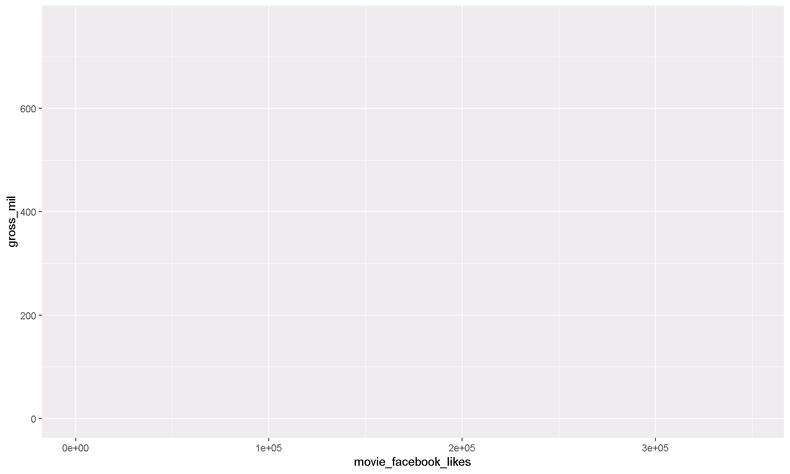
8.2.3 3. Add layers (geometries).
ggplot(movies, aes(x = movie_facebook_likes, y = gross_mil)) +
geom_point()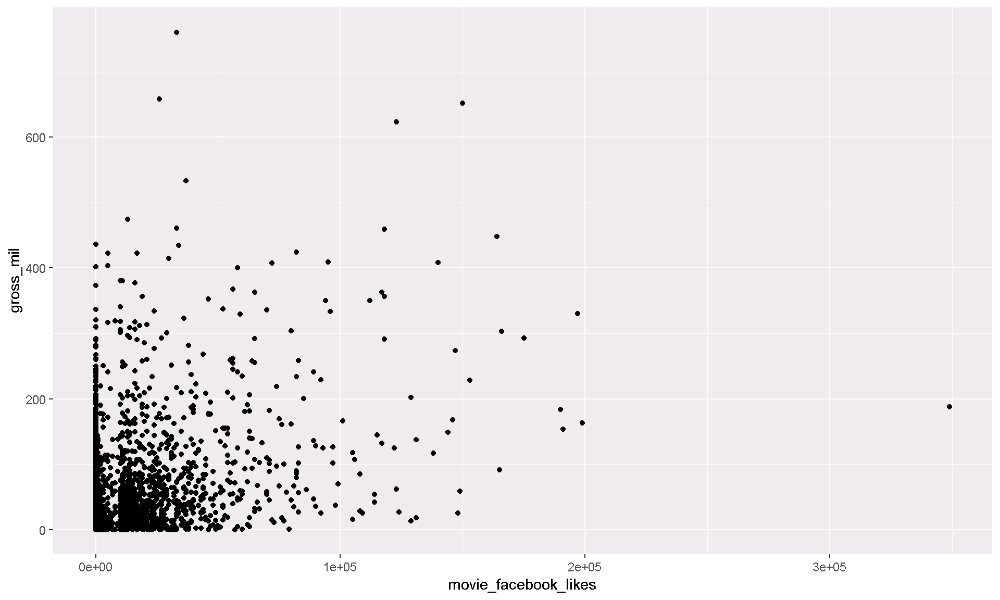
8.2.4 Pro-tip!
When you add more layers using
+, remember to place it at the end of each new line.
# This will work
ggplot() +
geom_point()
# BUT this will give you a nasty error message
ggplot()
+ geom_point()Exercise
Try making a scatterplot of any two columns.
Hint: Numeric variables will be more informative.
ggplot(movies, aes(x = ?column1, y = ?column2)) + geom_point()8.3 Scatterplots and point charts.
Let’s select only recent movies using filter().
filter(movies, title_year >= 2010)8.3.1 To repeat the earlier chart with the filtered data use the %>% pipe.
filter(movies, title_year >= 2010) %>%
ggplot(aes(x = movie_facebook_likes, y = gross_mil)) +
geom_point()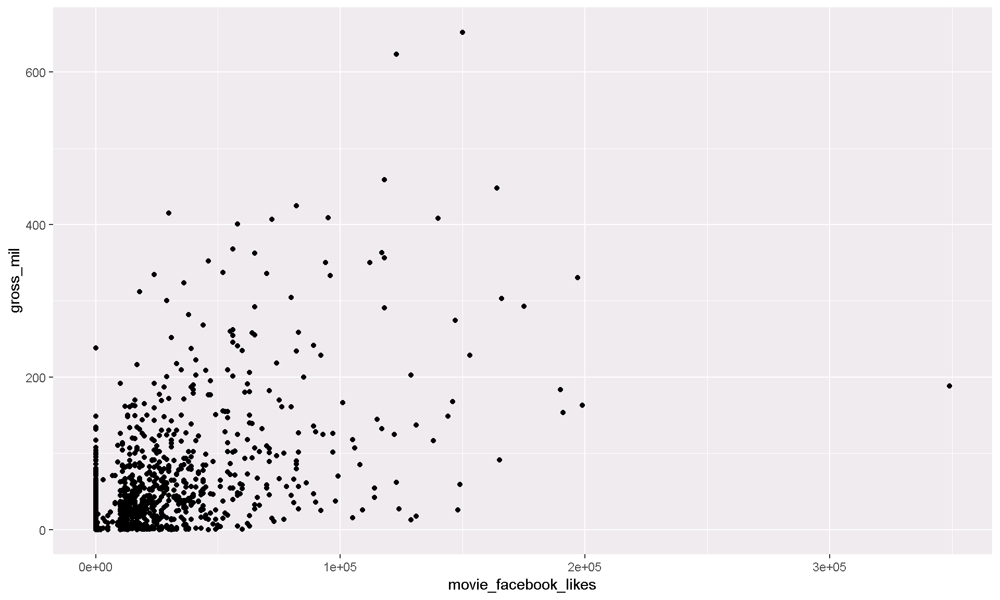
8.3.2 Add transparency to the points.
filter(movies, title_year >= 2010) %>%
ggplot(aes(x = movie_facebook_likes, y = gross_mil)) +
geom_point(alpha = 0.1) 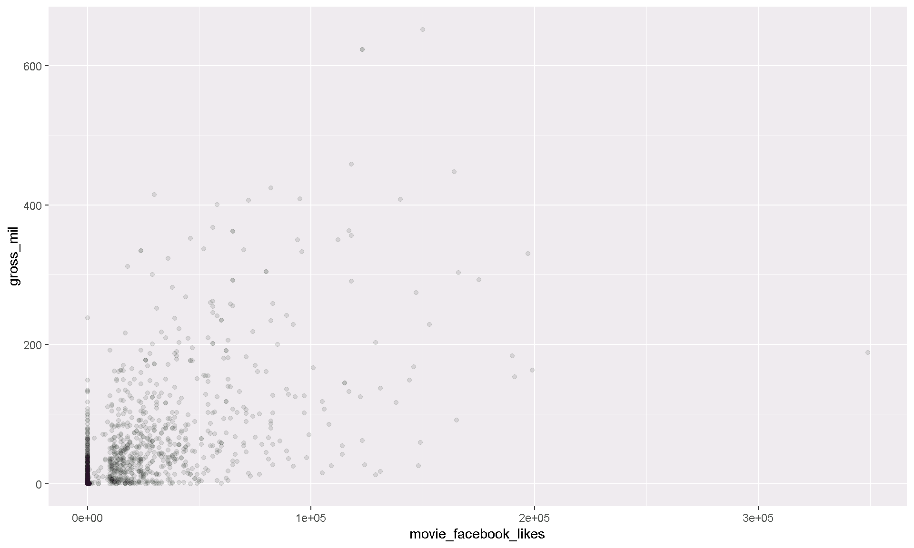
8.3.3 Add a regression line.
We can keep adding layers! You can build your plot sandwich as big as you like.

Use geom_smooth() to add a regression line.
filter(movies, title_year >= 2010) %>%
ggplot(aes(x = movie_facebook_likes, y = gross_mil)) +
geom_point(alpha = 0.25) +
geom_smooth(method = "lm")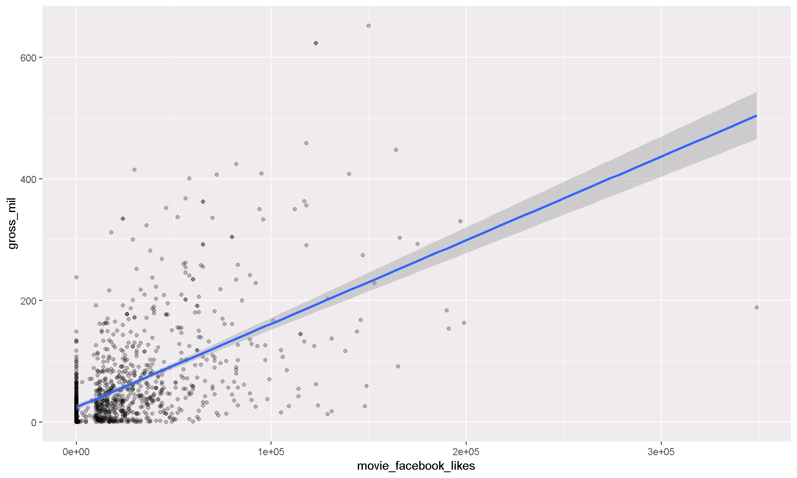
Exercise
Make a scatterplot of imdb_score and gross_mil with a fitted line showing the relationship.
Show solution
Stop cheating! Just kidding here’s some code to help.
filter(movies, title_year >= 2010) %>%
ggplot(aes(x = imdb_score, y = gross_mil)) +
geom_point(alpha = 0.25) +
geom_smooth(method = "lm")8.4 Histograms
Now let’s make some histograms showing how the total number of movies change over time.
ggplot(movies, aes(x = title_year)) + geom_histogram()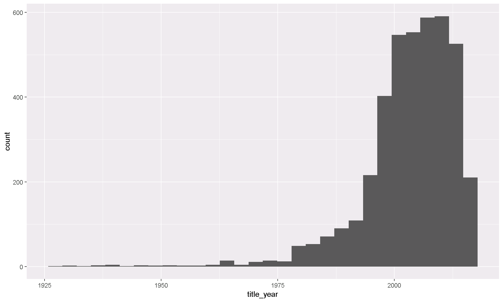
To show the changes per decade we can break the years into groups of 10.
ggplot(movies, aes(x = title_year)) + geom_histogram(binwidth = 10)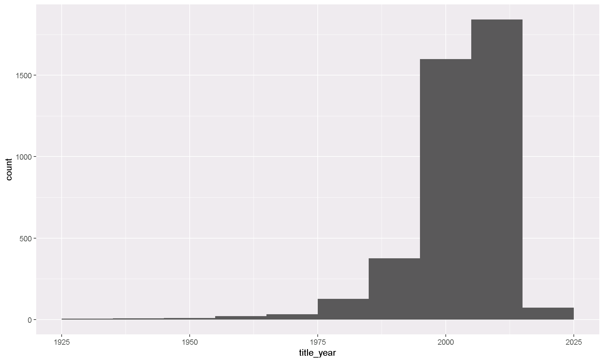
8.4.1 Break it down by movie_color.
You can assign different aesthetics to variables in the data set. The example below sets the fill color to variable movie_color. This will color code each color type, one color for black and white movies and one for color movies.
ggplot(movies, aes(x = title_year, fill = movie_color)) +
geom_histogram(binwidth = 10)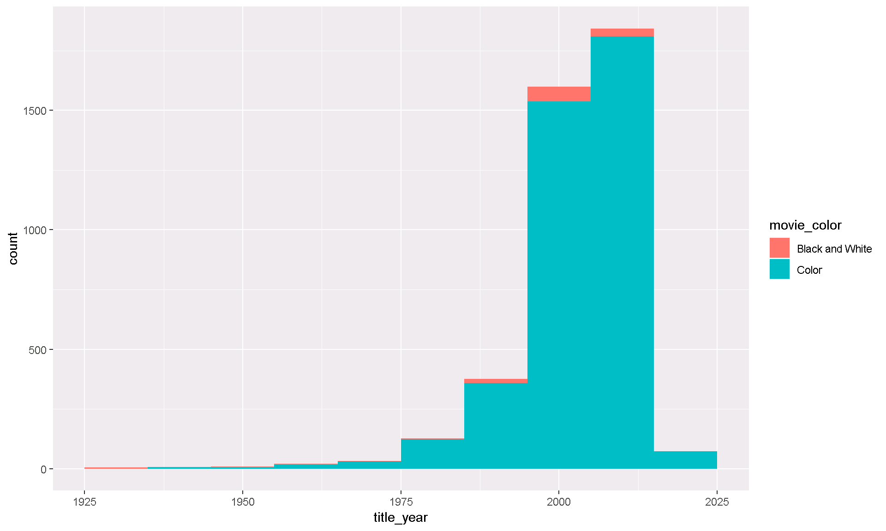
8.4.2 Move the bars side-by-side instead of stacked.
It’s difficult to see what’s going on with the black and white films. Let’s split the colors apart using position_dodge().
ggplot(movies, aes(x = title_year, fill = movie_color)) +
geom_histogram(binwidth = 10, position = "dodge")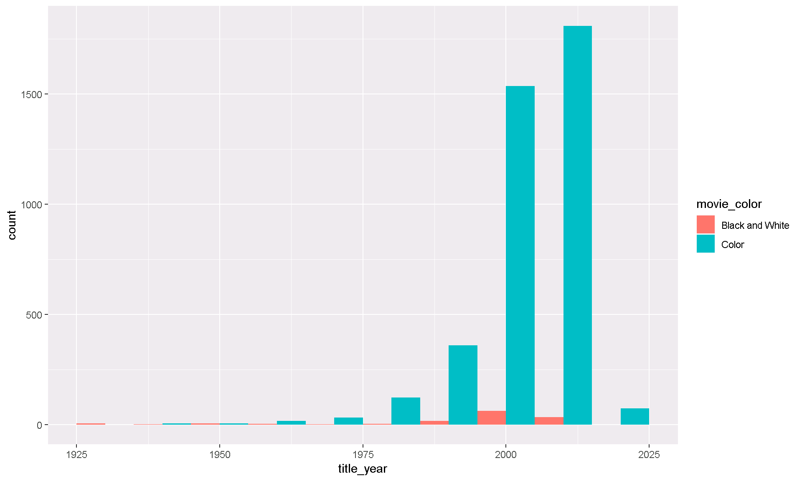
8.4.3 Split into separate charts for black and white vs. color
Maybe it would work better to use two separate charts. For that we can use facet_wrap().
ggplot(movies, aes(x = title_year, fill = movie_color)) +
geom_histogram(binwidth = 10) +
facet_wrap(~ movie_color)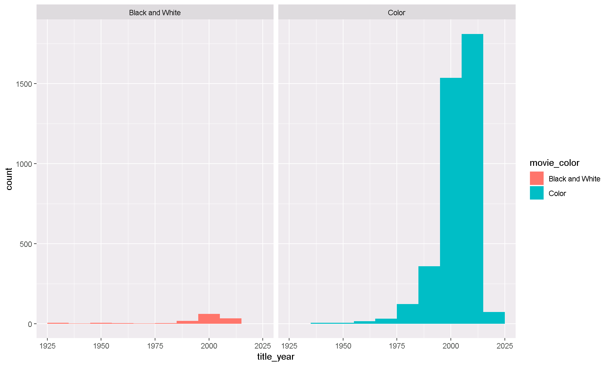
8.4.4 Free y-axis
That is almost good. It’s still hard to see the changes in black and white films. Let’s make the y-axis independent for each group using scales = "free_y". Type ?facet_wrap to see more options.
ggplot(movies, aes(title_year, fill = movie_color)) +
geom_histogram(binwidth = 10) +
facet_wrap(~ movie_color, scales = "free_y")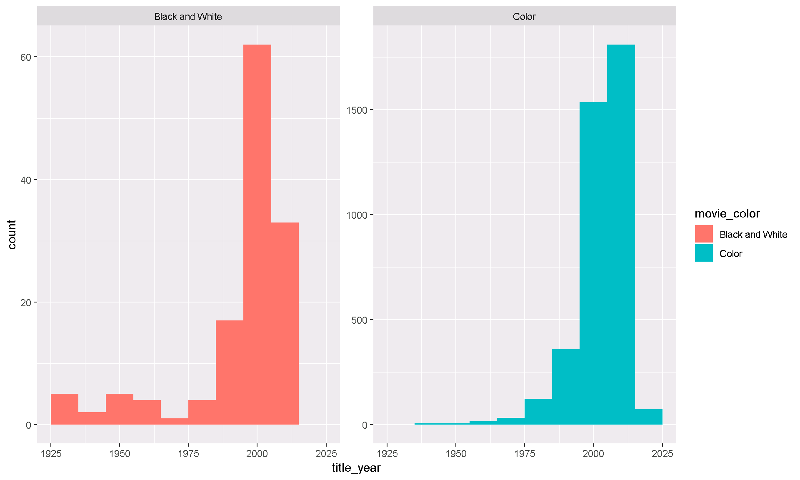
Note: When the scales are not uniform, make sure to point this out to your readers. Otherwise people might assume the scales are the same. Then they would think there are just as many black and white films as color movies.
Exercise
Make a histogram of the number of movies by decade with separate fill colors for each content_rating.
Decide which is the best way to present the bars: stacked, side-by-side, or on separate charts.
Show solution
# Stacked
ggplot(movies, aes(title_year, fill = content_rating)) +
geom_histogram(binwidth = 10)
# Side by side
ggplot(movies, aes(title_year, fill = content_rating)) +
geom_histogram(binwidth = 10, position = position_dodge())
# Separate charts
ggplot(movies, aes(title_year, fill = content_rating)) +
geom_histogram(binwidth = 10) +
facet_wrap( ~ content_rating)
# Free scale it
ggplot(movies, aes(title_year, fill = content_rating)) +
geom_histogram(binwidth = 10) +
facet_wrap( ~ content_rating, scales = "free_y")9 Day 2 homework
- Load some data into R from a recent project of yours.
- If you have data in Excel, you can export a .CSV file by choosing “Save as” and selecting CSV from the file type menu.
- Create 2 types of plots using the data.
- Paste the function
runif(1)into your console.- If the number you get is bigger than
0.2, email your charts to the rest of the class.
- If the number you get is bigger than